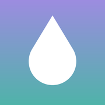

NewbeeSupport
Questions, a bug, or an idea for Newbee? Email newbee.app.help@gmail.com and we'll get back to you as soon as we can. It helps to include your iPhone model and iOS version (Settings → General → About) and the Newbee version (Newbee → Settings → About).
Common questions
The timer doesn't show on my Lock Screen.
Open the iPhone Settings app → Newbee and turn on Live Activities. The timer appears on the Lock Screen and in the Dynamic Island once a feed is running.
Why do Lock Screen buttons ask me to unlock?
iOS asks for Face ID or your passcode before an app can change data from the Lock Screen. The Dynamic Island buttons work right away while your iPhone is unlocked.
I'm not getting feeding reminders.
Turn reminders on in Newbee → Settings → Notifications, and make sure notifications are allowed in the iPhone Settings app → Notifications → Newbee. Quiet hours pause reminders overnight.
Do my feeds sync between my devices?
Yes, if you turn it on. Go to Newbee → Settings → iCloud and turn on Sync with iCloud. Feeds, the baby profile and settings then sync to every iPhone and iPad signed in to the same Apple ID. It's off until you turn it on.
Can my partner see the same feeds?
Yes. Go to Newbee → Settings → Sharing and send the invitation to your partner. Once they accept on their iPhone, you both see and log the same feeds. Sharing uses your private iCloud, and you can stop it at any time.
What is Night Shift?
When you share feeds with a partner, one of you can tap "Start your night shift" on Home in the evening. Feeding reminders then ring only on that iPhone until morning, and the other parent sees a "While you slept" summary when they wake up.
How do I share feeds with our pediatrician?
Go to Newbee → Settings → Your data and export a PDF report or a CSV file, then share it however you like.
How do I delete my data?
Newbee → Settings → Your data → Delete all data. Deleting the app also removes everything it stored.
Newbee is a log, not medical advice. Always talk to your pediatrician about feeding concerns.